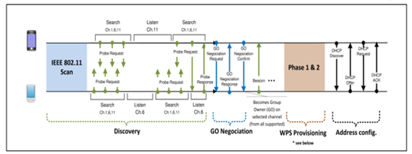

Peer to Peer¶
Introduction¶
CC35xx Simplelink Wi-Fi family of devices supports P2P which is peer-to-peer connection. It is also referred to as Wi-Fi Direct and generally it is a decentralized communication where two or more parties interact directly with each other. The purpose of this section is to familiarize users with Wi-Fi Direct in general and the relevant procedure in particular. The set of p2p APIs available to the application are covered under the Basic Operations section.
Terminology¶
- P2P – Peer to Peer or WiFi Direct
- P2P Device – WiFi Direct device that manages P2P negotiation and capable of acting as both P2P GO and P2P Client
- P2P GO – P2P Group Owner, an AP like entity
- P2P Client – a Client that is connected to P2P Group Owner
- P2P Group – a set of devices consisting of one P2P Group Owner and zero or more Clients
- Social Channels - subset of commonly available channels in the 2.4 GHz band (channels 1, 6, and 11)
- Operating Channel – the channel on which P2P Group is operating
- WSC - Wi-Fi Simple Configuration which is commonly associated with Wi-Fi Protected Setup (WPS)
The P2P architecture consists of components that interact to support device-to-device communication.
P2P Device¶
Supports both P2P Group Owner and P2P Client roles. Negotiates P2P Group Owner or P2P Client role. Supports WSC and P2P Discovery mechanism. May support WLAN and P2P concurrent operation.
P2P Group Owner role¶
“AP-like” entity that provides BSS functionality and services for associated Clients (P2P Clients or Legacy Clients). Provides WSC Internal Registrar functionality. May provide communication between associated Clients. May provide access to a simultaneous WLAN connection for its associated Clients.
P2P Client role¶
Implements non-AP STA functionality. Provides WSC Enrollee functionality.
Procedures¶
P2P connection has to go through the following phases to form a Group:
- P2P Device Discovery
- P2P GO Negotiation
- WPS Provisioning
- Address config
Once Group is formatted, one device becomes AP-like (Group Owner) while the other becomes STA-like (P2P Client).
The following figure illustrates the different phases.

Fig. 2 P2P phases
P2P Discovery¶
P2P Discovery provides a set of actions to allow one device to find another, through Search and Listen Phases. During Find phase, a device would start scanning the social channels, active or passive. During Listen phase, a device would open its receiver on the listen channel. Since each device goes through both phases of Search and Listen, statistically it would get correlated at some point and hence find each other.
Note
During this phase, Probe Request frames from both devices should include two Information Elements (IEs), WPS IE and Wi-Fi Direct IE.
P2P GO Negotiation¶
This is a 3-way frame exchange used to agree which of the devices will become P2P Group Owner. Both devices send their Intent value (0 – 15) in negotiation frames (via Wi-Fi management Action frames). Device with the highest intent value will become the P2P Group Owner. The Group channel is included as an attribute in the Wi-Fi Direct IE.
WPS Provisioning¶
After the negotiation is done, a P2P group is formed. The P2P Device selected as a P2P GO starts sending beacons using the operation channel indicated during Negotiation. P2P Client shall connect in two phases, WPS and then regular 4-way handshake. WPS (Wi-Fi Protected Setup) establishes a secure connection between devices without requiring the user to enter a password. Same as a regular WPS Connection. The P2P GO provides a WSC internal registrar functionality whereas the P2P Client provides a WSC Enrollee functionality. The supported methods are push button (PBC), PIN keypad and PIN display.
Application Flow example¶
To demonstrates how to make a p2p connection using the existing cc35xx SDK, it is best to use the existing commands in network_terminal example. For the test, any device that supports p2p can be used. For this guide, an Asus tablet is used.
- wlan_start - starting the device by downloading the containers to the Wi-Fi MAC processor.
- p2p_role_up - starting in station role in default configuration if no parameters are provided.
- p2p_set_channel - setting p2p configuration. For example, to set the operating channel and class to 1 and 81 repectively, the listen channel and class to 6 and 81 respectively, and the P2P GO intent value to0:
p2p_set_channel -c 1 -o 81 -s 6 -m 81 -i 0
- p2p_find - cc35xx goes into p2p negotiation phase (interlacing Search and Listen). For example, to scan up to 10 devices with the previous parameters where cc35xx listen on channel 6 and search on channels 1, 6 and 11:
p2p_find -n 10
- p2p_connect - actual connection to the peer device after the desired peer device appear in the scanned list. For example, assuming peer device with MAC address of 00:11:22:33:44:55 appears in the list, and a push button method is desired:
p2p_connect -m 00:11:22:33:44:55 -w 0 -p 0
The expected events are triggered back to the application through an event callback registration.
If already connected, first a WLAN_EVENT_DISCONNECT event would be triggered.
Then, WLAN_EVENT_CONNECTING, WLAN_EVENT_ASSOCIATED and WLAN_EVENT_P2P_GROUP_STARTED events should get triggered.